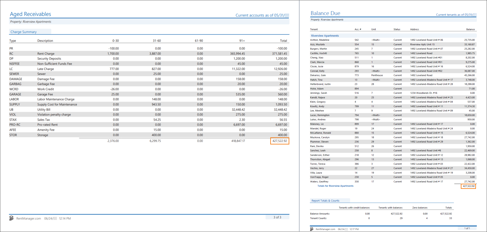
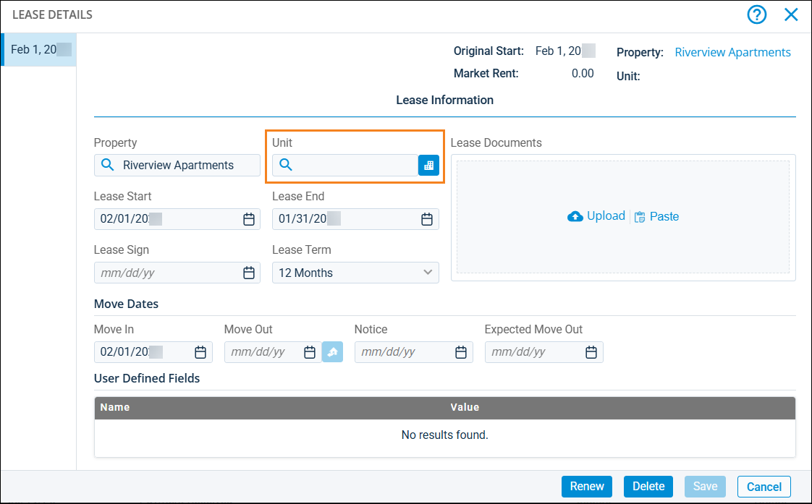

Source: https://rmxhelp.rentmanager.com/Topics/Express/KB/Report-Aged-Receivables-Balance-Due.htm
Aged Receivables and Balance Due
The Aged Receivables and Balance Due reports both provide information on customer balances, but they display this data in different ways. You can use these reports to gain insight on delinquent accounts in your portfolio, with the Aged Receivables providing details on the duration of charge delinquency, and the Balance Due providing an breakdown of the total balance each account owes.
Warning
The information contained here does not replace the advice of an accountant. If you are unclear about how to interpret the data presented in the related reports, please consult your accountant.
The Aged Receivables report displays open charge information for tenants, prospects, and owners as of the selected date. The report categorizes open charges based on whether they are 0–30 days, 31–60, 61–90, or 90+ days past their creation date to help you track delinquency. The Balance Due report displays the current amount of unpaid tenant, and, optionally, prospect, transactions as of the report date.
Related Privileges
| Group | Privilege | Column |
|---|---|---|
| Letter/Email Templates/Reports/Packets | Run reports | Enabled |
Additionally, on the Reports tab, you must have access to Aged Receivables and Balance Due.
For more information, refer to Control User Access.
When run with comparable options, the Aged Receivables’ Total column matches the Balance Due’s Balance column.

Report Options
To populate comparable reports, use the report option combinations listed in the table below. Report options not mentioned do not affect comparability and can be left on their default setting.
| Aged Receivables | Balance Due | Description |
|---|---|---|
|
Properties to Include |
Properties to Include |
The same properties or property group must be selected for both reports. |
|
As of Date |
As of Date |
The same date must be selected for both reports. |
|
Charges to Include |
n/a |
Select all charge types. The Balance Due report automatically includes all charges. |
|
Accounts to Include |
Tenants to Include |
Select options consistent across each report. For example, to include only current tenants, select Current for both reports. More Information Unlike the Balance Due report, the Aged Receivables report cannot be run for exclusively future tenants. To include future tenants in the Aged Receivables, select All. To ensure the Balance Due displays matching data, you must likewise select All in its report options. |
|
Include accounts with a balance greater than or equal to |
Values to Include |
To limit the accounts that display, check this box in the Aged Receivables report options and enter an amount. To match that selection on the Balance Due, select the >= operator from the drop-down list, then enter the same amount in the Values to Include Amount field. For example, to include tenants with only positive balances, enter 0.01 in the respective fields on each report (with the >= operator selected on the Balance Due). To view tenants with positive or negative balances, uncheck this box on the Aged Receivables and select All from the drop-down menu on the Balance Due. |
|
Show Credits |
n/a |
Check Show Credits. The Balance Due report automatically includes all credits. |
|
Include Prospects |
Prospects to Include |
To get matching data on prospect accounts, check Include Prospects on the Aged Receivables. On the Balance Due, in the Prospects to Include drop down menu, select All. More Information Because the Aged Receivables report automatically includes all prospects when Include Prospects is selected, selecting any option other than All in the Prospects to Include on the Balance Due report can result in discrepancies between the reports. |
Troubleshooting Balance Discrepancies
While running the reports with the suggested report options above allows the reports to examine the same data, there are other factors that can cause discrepancies between these value totals.
More Information
When troubleshooting, it is recommended that for the Aged Receivables report, you set the Detail or Summary report option to Detail to view each individual charge and credit for each tenant. This makes it easier to pinpoint specific transactions that may cause discrepancies between the two reports.
Leases Not Tied to a Unit
The Aged Receivables report examines all open charges, regardless of the status of a tenant's lease. However, when a tenant's lease does not have a specified unit in the Unit field, their account is omitted from the Balance Due report. If you find that a tenant is not in either report, verify that their lease is assigned a unit. If there is no unit assigned, enter the appropriate unit, save your changes, then refresh your reports. For more information, refer to Lease Details (Page).
